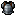
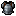
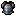
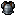

Same source and requested capacity: current, guarded candidates, PixelLab
Native pixels plus nearest-neighbor enlargement. Point error is not semantic quality. Mean-only refinement can leave the shared target; strict guards are not a visual guarantee. Same-target swaps shows the permissive mean policy; all swap policies retained Current Auto in these cases.
Armor · up to 2 colors
Source

Current Auto Point 0.0176270Mean-only refinement Point 0.0175342Strict refinement Point 0.0176270Same-target swaps Point 0.0176270PixelLab Point 0.0205699
Armor · up to 4 colors
SourceCurrent Auto Point 0.0054676Mean-only refinement Point 0.0052483Strict refinement Point 0.0054676Same-target swaps Point 0.0054676PixelLab Point 0.0054529
Armor · up to 8 colors
SourceCurrent Auto Point 0.0012866Mean-only refinement Point 0.0011899Strict refinement Point 0.0012866Same-target swaps Point 0.0012866PixelLab Point 0.0015293
Armor · up to 16 colors
SourceCurrent Auto Point 0.0004790Mean-only refinement Point 0.0004095

Strict refinement Point 0.0004790

Same-target swaps Point 0.0004790PixelLab Point 0.0005571

Inventory · up to 2 colors
SourceCurrent Auto Point 0.0184830Mean-only refinement Point 0.0179684Strict refinement Point 0.0184830Same-target swaps Point 0.0184830PixelLab Point 0.0464126
Inventory · up to 4 colors
SourceCurrent Auto Point 0.0078121Mean-only refinement Point 0.0075739Strict refinement Point 0.0078121Same-target swaps Point 0.0078121PixelLab Point 0.0117573
Inventory · up to 8 colors
SourceCurrent Auto Point 0.0044035Mean-only refinement Point 0.0041765Strict refinement Point 0.0044035Same-target swaps Point 0.0044035PixelLab Point 0.0056373
Inventory · up to 16 colors
SourceCurrent Auto Point 0.0023047Mean-only refinement Point 0.0020417Strict refinement Point 0.0023047Same-target swaps Point 0.0023047PixelLab Point 0.0026432